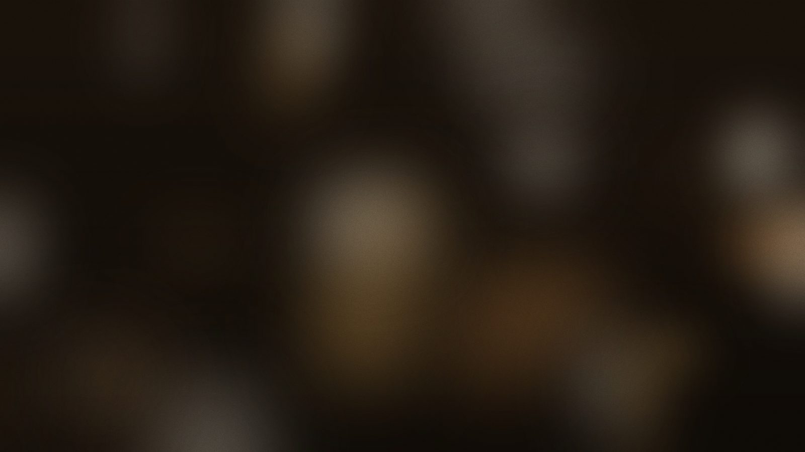
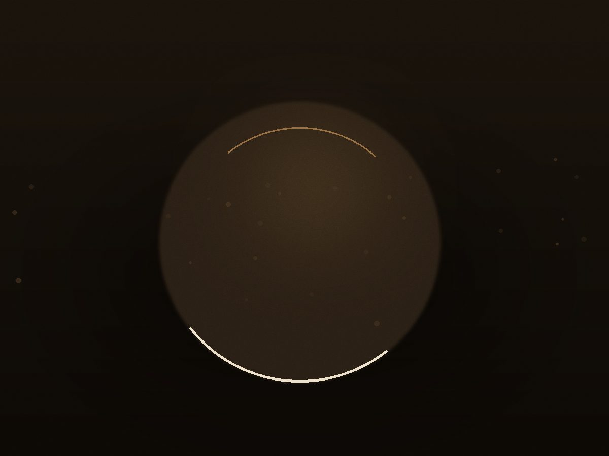
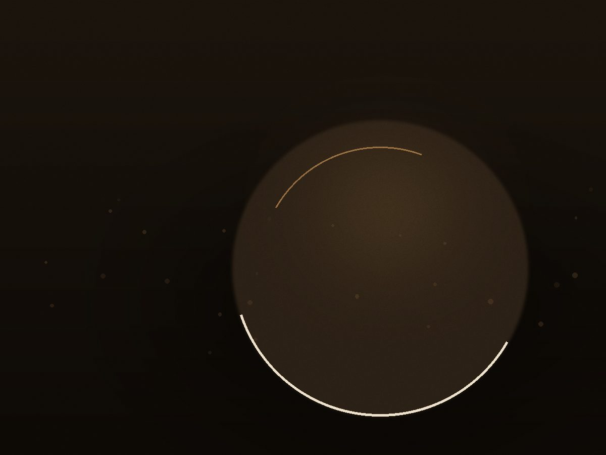
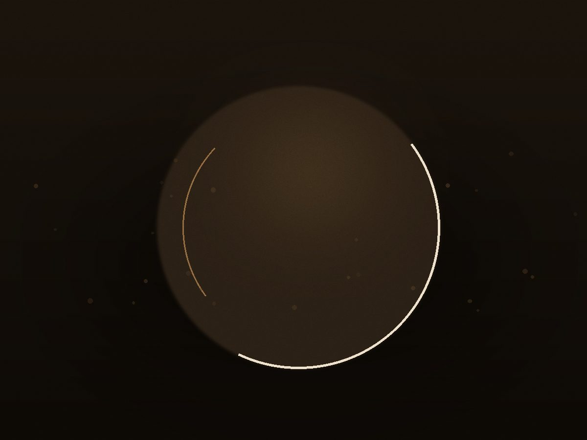
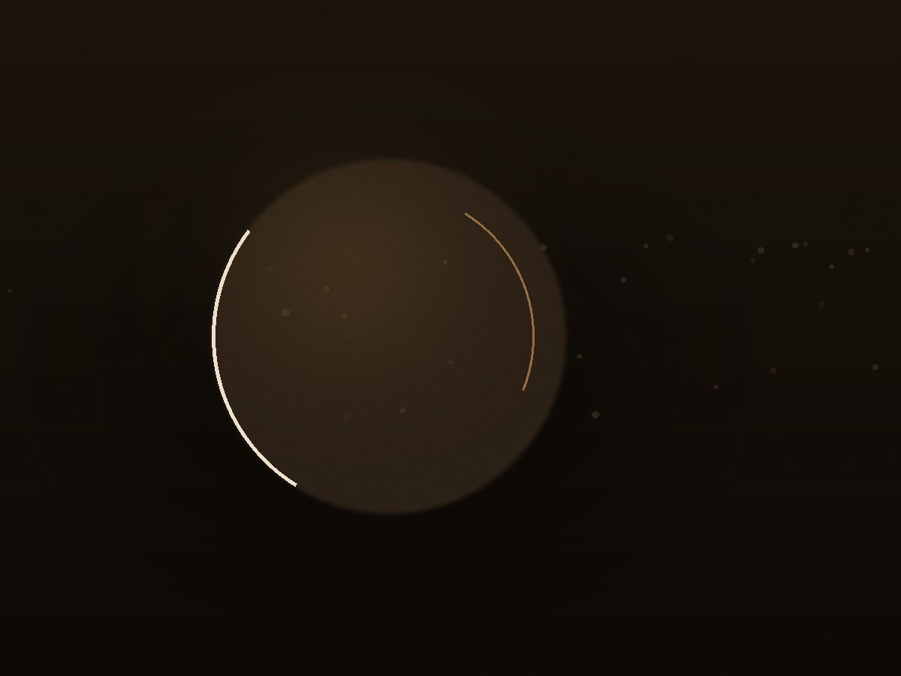
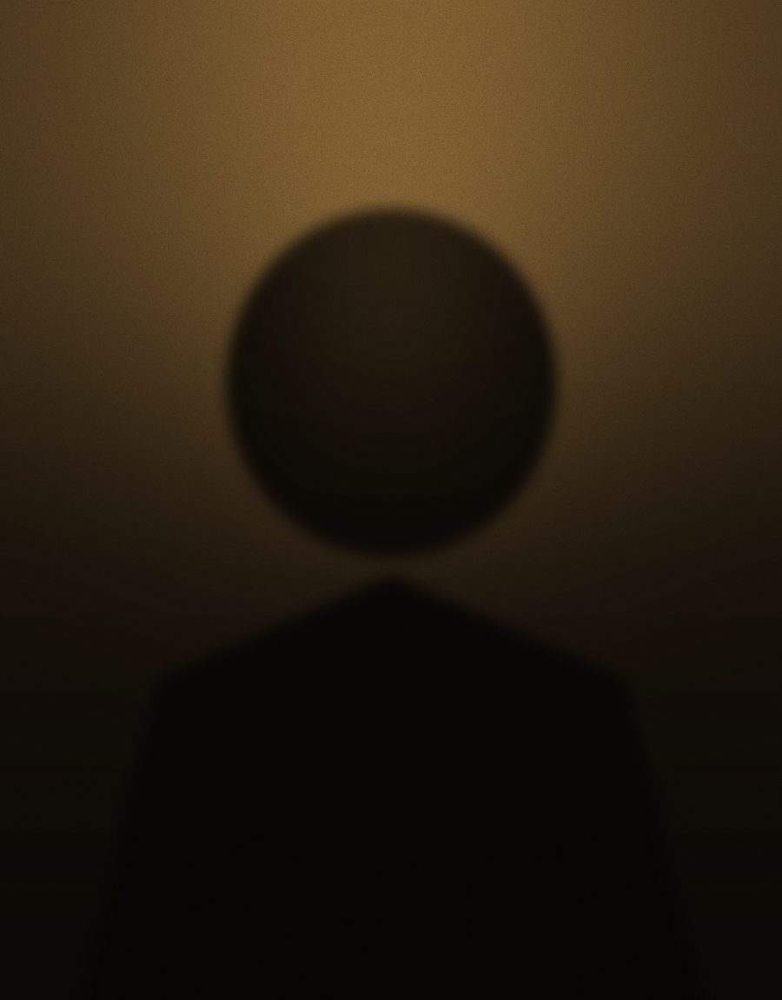

Ресторан авторской кухни · с 2019 года
Семь подач, один стол, вкус без лишних слов.
Ужин, который хочется растянуть до полуночи.
О ресторане
«СОЛЬ» — ресторан на двенадцать столиков в старом доме у набережной. Мы готовим на живом огне и угле, покупаем рыбу у прибрежных бригад, а овощи — у двух хозяйств под городом.
Меню меняется четыре раза в год: вслед за сезоном, а не за модой. Винная карта — 80 позиций, из них треть — от малых хозяйств.

Галерея





Шеф
— Марат Ильин, шеф-повар и сооснователь. Пятнадцать лет на кухне: от городской пекарни до ресторана с мишленовской рекомендацией. В «СОЛИ» отвечает за сет и открытую кухню, куда можно заглянуть из зала.
Бронирование
Мы перезвоним за час, чтобы подтвердить бронь.